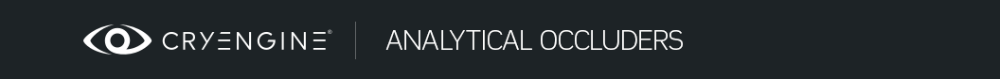

Analytical Occluders
This is a very experimental mode that is supposed to be used only in very few cases. Mostly it may be useful for small indoor scenes where high resolution and leak free indirect lighting is required.
Instead of automatic voxelization, the level designer can construct a simplified proxy scene out of basic analytical shapes like boxes, cylinders and capsules. The engine will use this proxy scene instead of voxels (in the future they will probably work together).
It may sound like more manual work for a level designer but if we look at how many hours designers (using other engines) spend waiting for light map calculations after each object move or parameter change, it may become more efficient for production to just place 20-30 proxy objects into the scene and see the final illumination immediately and have direct real-time control over lighting.
This mode can be activated via the Analytical GI checkbox in the Environment Editor → Constants → Total Illumination Advanced section. When it's enabled, voxel tracing is completely excluded.
In this screenshot all the geometry you see is actually the proxy geometry that will be invisible in final scene.

Proxy geometry (scene made by Enes77)
There are 2 lighting components in the scene:
- A portal is used as area light to simulate primary bounce from the sky with sharp contact shadows.
- AO pass is used to simulate secondary bounces and also to collect bounces from sunlight. It is not very sharp.
Here is the demo level, it's compatible only with CE 5.2: AGIDemo2.zip
| Suffix | Description | Supported modes |
|---|---|---|
| _TI_AO | Normal occluder for analytical GI (works for portal lighting, AO and light bounces) | Only for analytical GI mode |
| _TI_AOH | Same as before but produces harder conservative (leak-free) shadow | Only for analytical GI mode |
| _TI_PO | Post occluder used with average light direction (this is old "_TI_AO" occluder) | Works in all modes |